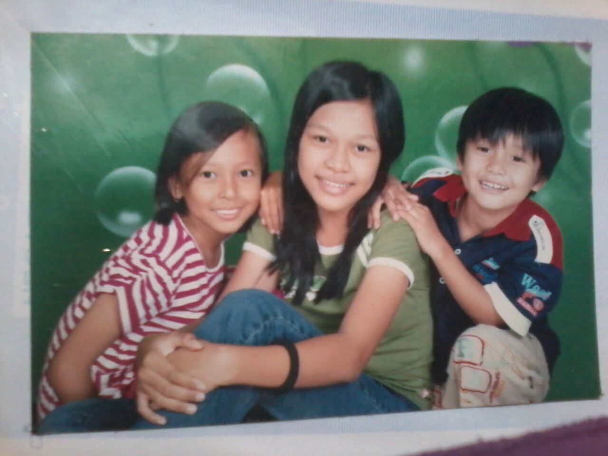
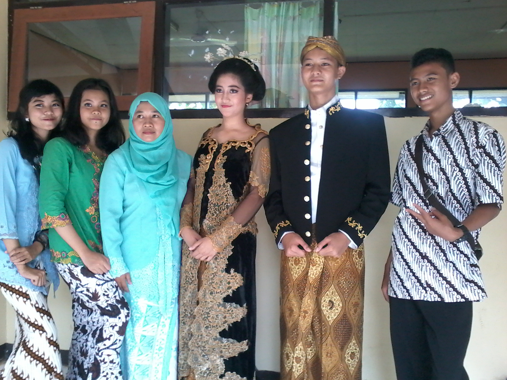
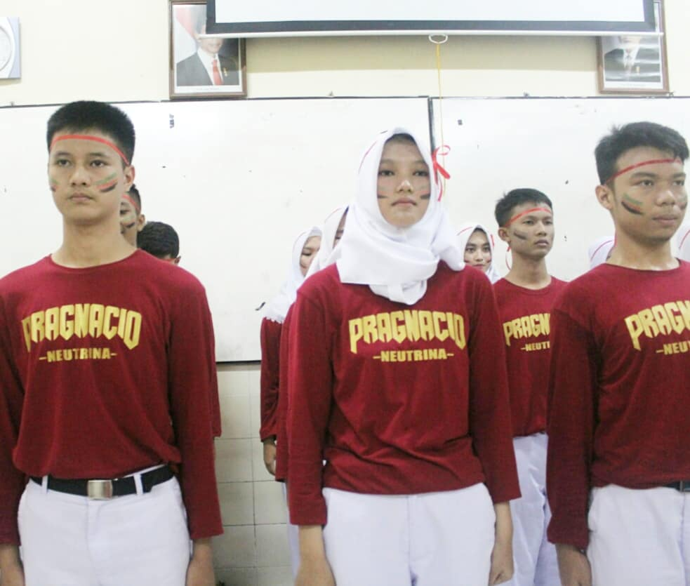
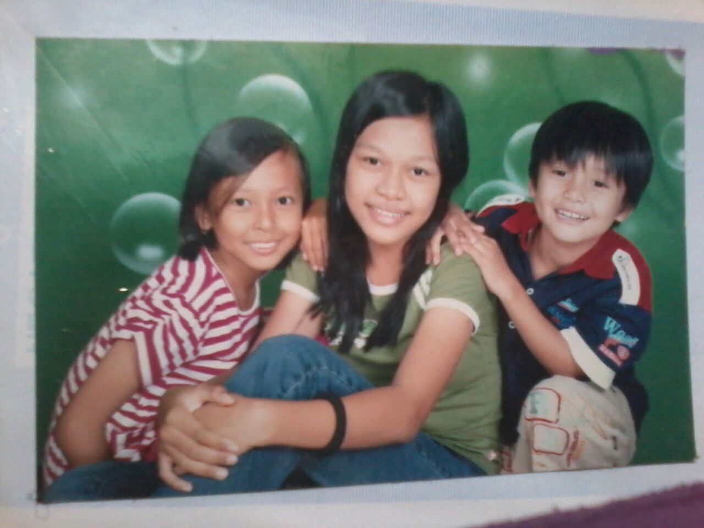
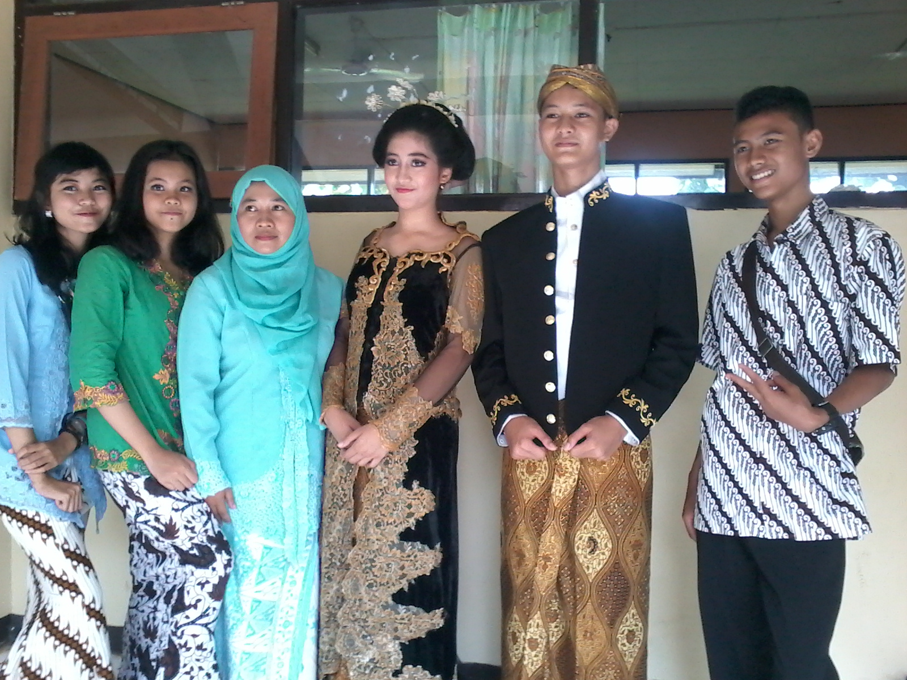
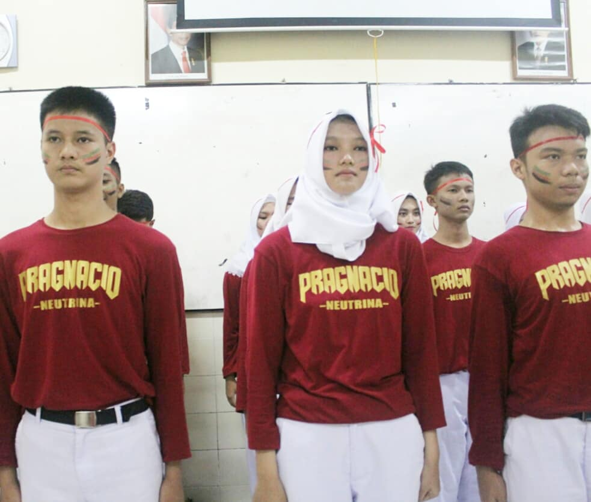

  
  Nama aku Muhammad Genta Zuan Nur illyasa.Biasa dipanggil Genta.Aku lahir di Bogor pada tanggal 31 Maret 2002.Aku lahir dari orang tua yang berbeda suku.Bundaku berasal dari suku Sunda dan ayahku berasal dari suku Lampung.Aku tinggal di kampung Cipaku Sukawarna rt 2/3 Kelurahan Cipaku,Kecamatan Bogor Selatan,Kota Bogor.Aku adalah anak pertama dari 3 bersaudara dan aku memiliki 1 adik laki-laki dan 1 adik perempuan.Saya adalah seorang siswa kelas 11 di SMK-SMAK Bogor.Alasan saya memilih SMK-SMAK Bogor sebagai lanjutan dari SMP adalah salah satunya karena SMK-SMAK Bogor mudah mendapatakan kerja.Sebelumnya saya ingin bersekolah yang terdapat jurusan sesuai hobi saya,yaitu memasak.

Itu adalah salah satu foto dari hobiku,yaitu memasak.Menurut saya memasak adalah salah satu cara untuk mengekspresikan diri.Ketika memasak dan perasaan saya sedang tidak bagus,maka saya memasak hanya asal masak dan rasanya pun tidak terlalu enak.Tetapi ketika perasaan saya sedang bahagia/senang,maka saya akan memasak dengan sungguh-sungguh dan makanan tersebut harus enak.Dengan memasak,banyak keuntungan yang bisa didapat,yaitu dapat membuka lahan pekerjaan seperti berjualan makanan,membuka restoran,dll.Banyak orang bilang bahwa laki-laki yang suka masak itu seperti perempuan.Nyatanya,banyak di luar sana yang berprofesi sebagai chef adalah laki-laki dan mereka hebat-hebat.Bukankah laki-laki yang bisa masak itu suami idaman? wkwkwk.Dan saya akan membuktikan hal itu ke semua orang.Ketika kita gagal meraih apa yang kita inginkan,janganlah pernah putus asa dan coba lah terus sampai bisa meraihnya.Sama seperti memasak,ketika kamu gagal dalam hal rasa,tekstur,tampilan dan yang lainnya,janganlah pernah menyerah,teruslah berusaha sampai makanan yang kamu masak itu sesuai dengan apa yang kamu inginkan

Itu foto bareng idolaku yaitu Taylor Swift.Jangan diliatin dong kan jadi malu. wkwkkw